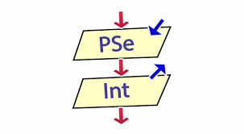

📌 ¿Qué es PseInt?
PSeInt es una herramienta educativa para escribir, ejecutar y depurar algoritmos utilizando pseudocódigo en español. Su objetivo es ayudar a los estudiantes a desarrollar lógica de programación antes de aprender lenguajes como Java, Python o C++.
🔁 Estructuras que aprendí
- Variables (entero, real y cadena).
- Condicionales (Si, Sino).
- Ciclos (Mientras, Para y Repetir).
- Funciones y Subprocesos.
📌 Ejemplos prácticos
1. Saludo personalizado:
Algoritmo saludo
Definir nombre Como Cadena
Escribir "¿Cómo te llamas?"
Leer nombre
Escribir "Hola ", nombre, " bienvenido a PSeInt"
FinAlgoritmo2. Promedio de 5 notas:
Algoritmo promedio
Definir n1,n2,n3,n4,n5,prom Como Real
Escribir "Ingrese 5 notas:"
Leer n1,n2,n3,n4,n5
prom=(n1+n2+n3+n4+n5)/5
Escribir "El promedio es: ",prom
FinAlgoritmo3. Área de figuras:
Algoritmo areas
Definir opcion Como Entero
Escribir "1.Rectángulo"
Escribir "2.Triángulo"
Escribir "3.Círculo"
Leer opcion
Segun opcion Hacer
1:
Escribir "Base y altura:"
Leer b,h
Escribir "Área: ", b*h
2:
Escribir "Base y altura:"
Leer b,h
Escribir "Área: ", (b*h)/2
3:
Escribir "Radio:"
Leer r
Escribir "Área: ", PI*r^2
FinSegun
FinAlgoritmo🖼️ Recurso multimedia interactivo
🔥 Haz clic en la imagen para entrar al sitio oficial de PSeInt.

💭 Reflexión personal
¿Por qué elegí este tema? Porque PSeInt me ayudó a entender la lógica de programación. Antes intentaba escribir código directamente y me confundía, pero ahora primero planteo el algoritmo y luego lo convierto en código real.
¿Dónde se aplica? En cualquier área de desarrollo de software, desde programas sencillos hasta inteligencia artificial, aplicaciones móviles y páginas web.